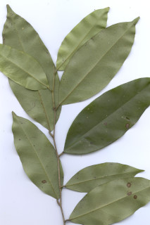
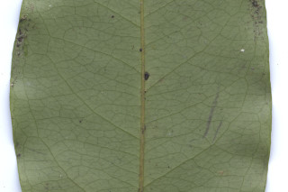
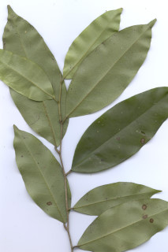
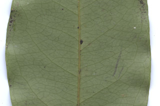

Trees up to 30 m tall.
30 ಮೀ. ಎತ್ತರದವರೆಗೆ ಬೆಳೆಯುವ ಮರಗಳು.
30 മീറ്റര് വരെ ഉയരമുള്ള മരങ്ങള്.
மரங்கள் 30 மீ. உயரம் வரை வளரக்கூடியது
Trunk fluted; bark whitish grey, smooth; blaze orange.
ತೊಗಟೆ ಆಳವಾದ ಕೊರಕಲುಗಳನ್ನು ಹೊಂದಿರುತ್ತದೆ ಮತ್ತು ರೋಮರಹಿತವಾಗಿರುತ್ತದೆ.
ചാലുകളുള്ള തായ്ത്തടി; മിനുസമുള്ള വെളുത്തു നരച്ച പുറം തൊലി; വെട്ടുപാടിന് ഓറഞ്ച് നിറം.
மரத்தண்டு குறுக்குவெட்டுத் தோற்றத்தில் ஒழுங்கற்ற வளையமானது; மரத்தின் பட்டை வெள்ளை கலந்த சாம்பல் நிறமானது, வழுவழுப்பானது; உள்பட்டை ஆரஞ்சு நிறமானது.
Branchlets terete, glabrous.
ಕಿರುಕೊಂಬೆಗಳು ದುಂಡಾಗಿರುತ್ತವೆ ಹಾಗೂ ರೋಮರಹಿತವಾಗಿರುತ್ತವೆ.
അരോമിലമായ, ഉരുണ്ട ഉപശാഖകള്.
சிறிய நுனிக்கிளைகள் குறுக்குவெட்டுத் தோற்றத்தில் வளையமானது,உரோமங்களற்றது.
Leaves simple, alternate, distichous; stipules ovate, caducous; petiole 0.5-1.3 cm long, canaliculate, glabrous; lamina 8-13 x 3-6.5 cm, narrow elliptic, apex bluntly acuminate, base acute and slightly asymmetric, margin entire, coriaceous, shining, glabrous; midrib flat above; secondary_nerves 7-12 pairs; tertiary_nerves reticulo-percurrent.
ಎಲೆಗಳು ಸರಳವಾಗಿದ್ದು ಪರ್ಯಾಯ ಜೋಡನಾ ವ್ಯವಸ್ಥೆಯಲ್ಲಿದ್ದು ಕಾಂಡದ ಎರಡೂ ಕಡೆ ಎದುರು ಬದರಿನ ಲಂಬಸಾಲಿನಲ್ಲಿರುತ್ತವೆ; ತೊಟ್ಟುಗಳು 0.5-1.3 ಸೆಂ.ಮೀ. ಉದ್ದವಿದ್ದು ಕಾಲುವೆಗೆರೆ ಸಮೇತವಿರುತ್ತವೆ ಹಾಗೂ ರೋಮರಹಿತವಾಗಿರುತ್ತವೆ; ಪತ್ರಗಳು 8-13 X 3 – 6.5 ಸೆಂ ಮೀ. ಗಾತ್ರ, ಸಂಕುಚಿತ ಅಂಡವೃತ್ತದ ಆಕಾರ ಹೊಂದಿರುತ್ತವೆ; ಪತ್ರಗಳು ಮೊಂಡಾದ ಅಗ್ರವುಳ್ಳ ಕ್ರಮೇಣ ಚೂಪಾಗುವ ತುದಿ ಹಾಗೂ ಚೂಪಾದ ಮತ್ತು ಕೊಂಚ ಅಸಮವಾದ ಬುಡವನ್ನು ಹೊಂದಿರುತ್ತವೆ; ಅಂಚು ನಯವಾಗಿರುತ್ತದೆ;ಮೇಲ್ಮೈ ತೊಗಲನ್ನೋಲುವ ಮಾದರಿಯಲ್ಲಿದ್ದು ಹೊಳಪನ್ನು ಹೊಂದಿರುತ್ತದೆ ಮತ್ತು ರೋಮರಹಿತವಾಗಿರುತ್ತದೆ; ಮಧ್ಯನಾಳ ಪತ್ರದ ಮೇಲ್ಭಾಗದಲ್ಲಿ ಚಪ್ಪಟೆಯಾಗಿರುತ್ತದೆ;ಎರಡನೇ ದರ್ಜೆಯ ನಾಳಗಳು 7-12 ಜೋಡಿಗಳಿರುತ್ತವೆ;ಮೂರನೇ ದರ್ಜೆಯ ನಾಳಗಳು ಜಾಲಬಂಧ ನಾಳ ವಿನ್ಯಾಸ ಹೊಂದಿದ್ದು ಎಲೆ ದಿಂಡಿಗೆ ಅಡ್ಡವಾಗಿರುತ್ತವೆ.
ലഘുവായ ഇലകള്, ഏകാന്തര ക്രമത്തില്, തണ്ടിന്റെ രണ്ടു ഭാഗത്തു മാത്രമായടുക്കിയ വിധത്തിലാണ്; എളുപ്പം കൊഴിഞ്ഞ് വീഴുന്ന അണ്ഡാകാരത്തിലുള്ള അനുപര്ണ്ണങ്ങള്; ചാലുള്ള അരോമിലമായ, ഇലഞെട്ടിന് 0.5 സെ.മീ മുതല് 1.3 സെ.മീ. വരെ നീളം; പത്രഫലത്തിന് 8 സെ.മീ മുതല് 13 സെ.മീ. വരെ നീളവും 3 സെ.മീ മുതല് 6.5 സെ.മീ വരെ വീതിയും, വീതി കുറഞ്ഞ ദീര്ഘവൃത്താകാരവുമാണ്, പത്രാഗ്രം മുനപ്പില്ലാത്ത ദീര്ഘാഗ്രമാണ്, പത്രാധാരം നിശിതവും ലഘുവായി അസമവുമാണ്, അവിഭജിതമായ അരികുകള്, ചര്മ്മില പ്രകൃതം, തിളങ്ങുന്നതാണ്, അരോമിലം; മുഖ്യസിര മുകളില് പരന്നതാണ്; 7 മുതല് 12 വരെ ജോഡി ദ്വിതീയ ഞരമ്പുകള്; ജാലിത-പെര്കറന്റ് വിധത്തിലുള്ള ത്രിതീയ ഞരമ്പുകള്.
இலைகள் தனித்தவை, மாற்றுஅடுக்கமானவை, இருநெடுக்கு வரிசையிலையடுக்கம் (டைஸ்டிக்கஸ்); இலையடிச்செதில் முட்டை வடிவானது, எளிதில் உதிரக்கூடியவை; இலைக்காம்பு 0.5-1.3 செ.மீ. நீளமானது, குறுக்குவெட்டுத் தோற்றத்தில் கேனாலிகுலேட், உரோமங்களற்றது; இலை அலகு 8-13 X 3-6.5 செ.மீ., குறுகிய நீள்வட்ட வடிவானது, அலகின் நுனி மழுங்கிய அதிக்கூரியது, அலகின் தளம் கூரியது மற்றும் சிறிது சமமற்றது, அலகின் விளிம்பு முழுமையானது, கோரியேசியஸ், பளபளப்பானது, கீழ்பரப்பு உரோமங்களற்றது; மையநரம்பு மேற்புறத்தில் அலகின் பரப்பிற்கு சமமானது; இரண்டாம் நிலை நரம்புகள் 7-12 ஜோடிகள்; மூன்றாம் நிலை நரம்புகள் வலைப்பின்னல்-பெர்க்கரண்ட்.
Flowers unisexual, dioecious; male flowers greenish white in axillary cluster; female flower solitary, long pedicellate.
ಹೂಗಳು ಏಕಲಿಂಗಿಗಳಾಗಿರುತ್ತವೆ ಮತ್ತು ಗಂಡು ಮತ್ತು ಹೆಣ್ಣು ಹೂಗಳು ಪ್ರತ್ಯೇಕ ಸಸ್ಯಗಳಲ್ಲಿರುತ್ತವೆ; ಗಂಡು ಹೂಗಳು ಹಸಿರು ಮಿಶ್ರಿತ ಬಿಳಿ ಬಣ್ಣದಲ್ಲಿದ್ದು ಅಕ್ಷಾಕಂಕುಳಿನಲ್ಲಿನ ಗುಚ್ಛಗಳಲ್ಲಿರುತ್ತವೆ;ಹೆಣ್ಣು ಹೂಗಳು ಒಂಟಿಯಾಗಿದ್ದು ಉದ್ದವಾದ ತೊಟ್ಟುಗಳ ಸಮೇತವಿರುತ್ತವೆ.
പൂക്കള് ഏകലിംഗികളാണ്, ഡയീഷ്യസും പച്ചകലര്ന്ന വെളുത്ത നിറത്തിലുള്ള ആണ് പൂക്കള് കക്ഷീയ കൂട്ടത്തിലുണ്ടാകുന്നു; നീളമുള്ള ഞെട്ടുള്ള പെണ് പൂവ് ഒറ്റക്കായുണ്ടാകുന്നു.
மலர்கள் ஓர்பாலானவை, ஈரகம் கொண்டவை; ஆண்மலர்கள் பச்சை கலந்த வெள்ளை நிறமானவை, இலைக்கோணங்களில் கூட்டமாக அமைந்தவை; பெண்மலர்கள் தனித்தவை, நீண்ட காம்புடையவை.
Drupe, obovoid, to 2.5 cm long; 1-seeded, arillate.
ಸಂಪುಟ ಫಲಗಳು ಬುಗುರಿಯಾಕಾರದಲ್ಲಿದ್ದು, 2.5 ಸೆಂ ಮೀ. ವರೆಗಿನ ಉದ್ದವನ್ನು ಹೊಂದಿರುತ್ತವೆ ಮತ್ತು ಪತ್ರೆಯುಳ್ಳ 1 ಬೀಜವಳನ್ನೊಳಗೊಂಡಿರುತ್ತವೆ.
അരിലുള്ള ഒറ്റവിത്തുമാത്രമുള്ള കായ, 2.5 സെ.മീ. വരെ നീളമുള്ള അപഅണ്ഡാകാര ഡ്രൂപ്പ് ആണ്.
உள்ளோட்டுத்தசைகனி (ட்ரூப்), தலைகீழ் முட்டை வடிவானது, 2.5 செ.மீ. நீளமானது; ஓர் விதையுடையது, ஏரில் கொண்டது.


 


